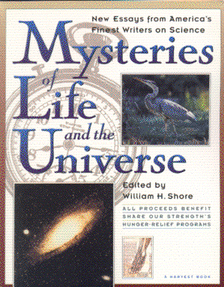

Mysteries of Lifeand the UniverseEdited by William H. Shore
publisher: Harcourt Brace
Non-fiction, 311 pages | 
(book cover art, Copyright ©1992 Share our Strength, Inc.)
Used with Permission. |
Return to the Book MenuPrevious|Next
Description:
A collection of short articles about science, ranging from
the big bang to stubbed toes, to dinosaur footprints.
Recommended for: people who couldn't make up their minds
from the other options!
Did-you-read questions:
Deadline: February 1, 2005.
These should be easy questions, but you should have the questions ready and keep an eye out during your reading. Each question should be answered with 1-2 sentences.
Note: these questions are not probably not the most important part of the book! Your essay will not have to cover these questions!
Identify which essay features each of the following:
- A shower scene
- A law that references itself
- An eclipse in Hawaii
- A guy from Harvard doing drugs
- Low disease rates in Japan
Report Questions:Deadline: Peer Review Session on February 8, 2005; paper due February 10, 2005.
You should write a 3 - 4 page essay on one of the following questions. Your essay should include examples and references to the book, unless otherwise specified. Page number references are sufficient for citing material from the primary book. If you use outside materials, cite your sources in full. If you would rather write on a different topic, you may, but clear it with Mr. Howe or Ms. Sullivan first.
- Consider two or three of the essays you read and find connections between
them. Do the authors agree or disagree on something? Do they approach the
same idea from different directions? How do these connections make you
feel about the topic? What conclusions can you draw?
- Some of these articles are about "Science." The author just dives right
in and talks about a theory or discovery. Others start off with a personal
experience and relate it to a scientific idea. Which approach do you prefer?
Give examples.
- Which of these essays made you reflect or change the way you view the world?
Describe this change or reflection, and how it has affected you.
- Where there any topics that you felt were missing from this collection?
Explain what they were and why they should be included in the book to complete
it.
Graphic and Presentation:
Deadline: February 21 - March 3, 2005.You will give a 10 minute presentation on both of the following:
- Convince your peers that they should (or should not) read this book. (This may include a brief summary of the book.) Give examples of what was cool or worthwhile in the book, and what you got out of it (or didn't).
- Describe a (realistic) science idea that you learned about in this book, citing information from at least 2 external sources (other than the dictionary). If you would like help choosing or understanding an idea from your book, you are invited to come talk to Mr. Howe or Ms. Sullivan.
Note: This presentation should not be just a reading of your paper!Along with this presentation, you should have a graphic that will go with it. A Power Point presentation is recommended, but if you have a special idea for a something else, such as a model, an original video presentation, or a well done drawing/ painting/ sculpture/ etc., you may do so, provided it involves a similar level of effort and polish. Speak to Mr. Howe or Ms. Sullivan first if you are considering an alternate graphic format to the Power Point.
Return to the Book MenuPrevious|Next